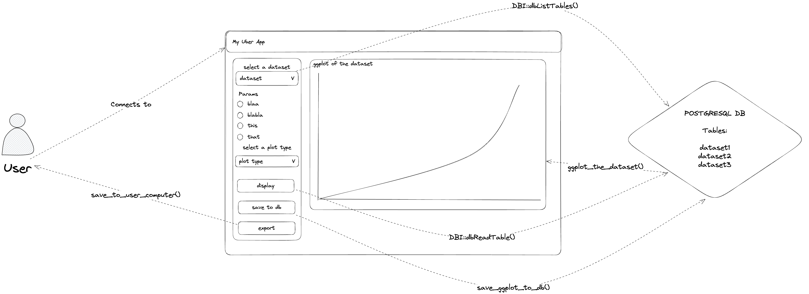

library(shinipsum)
ls("package:shinipsum", pattern = "random") |>
cat(sep = "\n")random_DT
random_dygraph
random_ggplot
random_ggplotly
random_image
random_print
random_table
random_textcolin
March 27, 2023
Prototyping first may help keep you from investing far too much time for marginal gains.
Coders like coding, that’s a golden truth. The joy of taking an idea and bringing it to life by writing a bunch of characters in a text file is one of the most empowering feelings for anyone who loves engineering software.
This creates a bad habit for us all: jumping into coding as soon as we get the requirement. Doing that will not set the perfect condition for our {shiny} app, and for several reasons:
In this blog post, I’ll present three packages from the golemverse that can you help make things easier for designing and prototyping.
{shinidraw}{shinidraw} is to bring the amazing Exaclidraw to your R console.
It can be installed with
Excalidraw is a whiteboard, in the browser, designed to sketch diagrams. In our context (designing and prototyping), Excalidraw is the tool of choice for:
At ThinkR, we’ve been using it for a while now, during the design and prototype stage of any {shiny} project. We use it for two purposes:
listing all the elements and interactions of the UI, server, and infrastructure elements (DB, deployment server…), so that at any moment of the project we can refer to this schema and know what we are developing.
as we build it with our clients, it is used as a tool to clarify our understanding of the project.
{shinidraw}Excalidraw is awesome, and we’ve been using it for prototyping {shiny} apps for a while now. So what was missing, and what does {shinidraw} brings to the table?
When used in the browser, Excalidraw saves your drawings in your browser’s local storage, and you can export and save them locally.
When using {shinidraw}, you’ll have a built-in project system, where the .excalidraw files are stored on the machine running the app.
If you work on an existing project, {shinidraw} will load the latest version of the .excalidraw file.
Here are the commands you can use to manage your projects:
The app will auto-save your drawings at a given interval, so you don’t have to worry about losing your work.
Here is a small example of what could be an infrastructure schema for an app:

{shinipsum} and {fakir}One common joke in the software engineering world is that you can have the best backend algorithm ever, the first feedback you will get about your app is that the buttons’ color should be blue. This sounds like a fun discussion, but that’s another golden truth of web apps: the user will always focus on the UI first, and you can ask for feedback about the backend as many times as you want, you’ll always get feedback about the UI.
That’s why we advise two things:
{fusen} for developing the backend).To build this prototype, the golemverse comes with the following packages:
{shinipsum}This package comes with a series of functions generating random UI elements so that you can use them in an ipsum app:
random_DT
random_dygraph
random_ggplot
random_ggplotly
random_image
random_print
random_table
random_textHere is what it looks like in a {shiny} app:
library(shiny)
library(shinipsum)
library(DT)
ui <- fluidPage(
h2("A Random DT"),
DTOutput("data_table"),
h2("A Random Image"),
plotOutput("image", height = "300px"),
h2("A Random Plot"),
plotOutput("plot"),
h2("A Random Print"),
verbatimTextOutput("print"),
h2("A Random Table"),
tableOutput("table"),
h2("A Random Text"),
tableOutput("text")
)
server <- function(input, output, session) {
output$data_table <- DT::renderDT({
random_DT(10, 5)
})
output$image <- renderImage({
random_image()
})
output$plot <- renderPlot({
random_ggplot()
})
output$print <- renderPrint({
random_print("model")
})
output$table <- renderTable({
random_table(10, 5)
})
output$text <- renderText({
random_text(nwords = 50)
})
}
shinyApp(ui, server)You can install it with:
{fakir}{shinipsum} creates fake UI elements, {fakir} creates fake datasets.
You can install it with:
With this package, we’ve aimed at mimicking “real life” datasets, so that you can use them in case you need to simulate inputs, models, backend elements, and others, before having access to DB and/or real datasets.
Here is for example a fake dataset of visits on a website:
# A tibble: 365 × 8
timestamp year month day home about blog contact
* <date> <dbl> <dbl> <int> <int> <int> <int> <int>
1 2017-01-01 2017 1 1 NA 64 446 145
2 2017-01-02 2017 1 2 159 102 487 250
3 2017-01-03 2017 1 3 NA 59 479 433
4 2017-01-04 2017 1 4 123 202 601 109
5 2017-01-05 2017 1 5 362 162 311 378
6 2017-01-06 2017 1 6 NA 244 450 350
7 2017-01-07 2017 1 7 NA 298 343 232
8 2017-01-08 2017 1 8 461 121 389 122
9 2017-01-09 2017 1 9 337 171 NA 150
10 2017-01-10 2017 1 10 155 151 515 NA
# ℹ 355 more rows